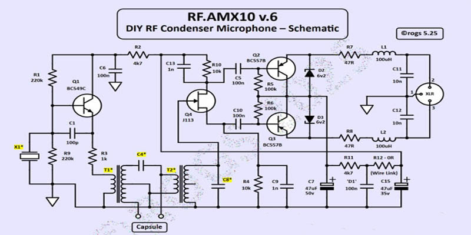
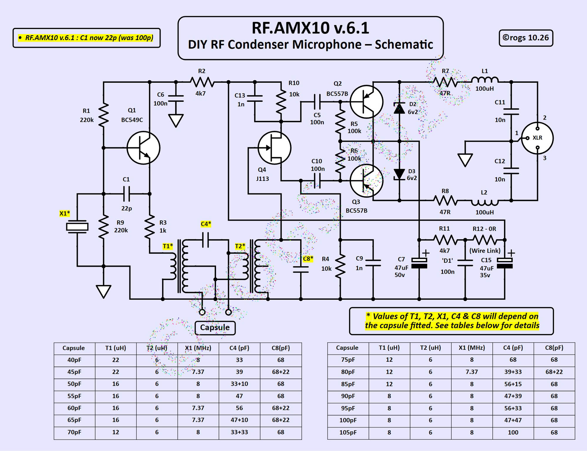

The schematic below shows the most recent version of the circuitry employed in the creation of this simple 'RF bias' microphone ...
• Just click on the schematic image for a PDF of the project details •

This latest version (v.6.1) includes significant revisions to the inductor specifications, which have been made to further enhance the perfomance of the microphone. The PCB layout remains the same.
The circuit concept is based on techniques described by audio engineering legend Peter Baxandall in THIS PAPER from 1963.
This circuit is designed to be connected to a low impedance, balanced XLR microphone pre-amplifier, which must have the option of providing 48V phantom power.